10 Data Visualization with ggplot2
If data is the new oil, then ggplot2 is the refinery that turns crude numbers into something people actually want to look at. It is the most popular visualization package in R, and for good reason — it makes charts that are clean enough for a board presentation and flexible enough for a quick-and-dirty exploration of last quarter’s sales.
Journalists at The New York Times use it. Analysts at Fortune 500 companies use it. After this chapter, you will use it too.
This chapter teaches you the mechanics of building charts. As you practice, you will develop intuition for which chart types work best for different data stories.
10.1 The Grammar of Graphics (the 30-Second Version)
Here is the big idea: every chart is built from the same three ingredients, kind of like how every business presentation has data, a story, and (hopefully) a point.
- Data – the dataset you want to visualize.
-
Aesthetics (
aes()) – which columns go where. This is where you say “put Revenue on the y-axis and Quarter on the x-axis.” - Geoms – the shapes that represent your data (points, bars, lines, etc.).
Data + mapping + shape. You can layer on extras (facets, labels, themes), but those three are the foundation of every single ggplot2 chart.
The template:
ggplot(data = <DATA>, mapping = aes(<MAPPINGS>)) +
<GEOM_FUNCTION>()You call ggplot(), tell it what data and mappings to use, then add a geom with +. That is it. Let’s see it in action.
10.2 Your First ggplot
We will use the mpg dataset that comes built into ggplot2 — fuel economy data for popular car models. Think of it as a product performance report for the auto industry.
glimpse(mpg)
#> Rows: 234
#> Columns: 11
#> $ manufacturer <chr> "audi", "audi", "audi", "audi", "audi", "audi", "audi", "…
#> $ model <chr> "a4", "a4", "a4", "a4", "a4", "a4", "a4", "a4 quattro", "…
#> $ displ <dbl> 1.8, 1.8, 2.0, 2.0, 2.8, 2.8, 3.1, 1.8, 1.8, 2.0, 2.0, 2.…
#> $ year <int> 1999, 1999, 2008, 2008, 1999, 1999, 2008, 1999, 1999, 200…
#> $ cyl <int> 4, 4, 4, 4, 6, 6, 6, 4, 4, 4, 4, 6, 6, 6, 6, 6, 6, 8, 8, …
#> $ trans <chr> "auto(l5)", "manual(m5)", "manual(m6)", "auto(av)", "auto…
#> $ drv <chr> "f", "f", "f", "f", "f", "f", "f", "4", "4", "4", "4", "4…
#> $ cty <int> 18, 21, 20, 21, 16, 18, 18, 18, 16, 20, 19, 15, 17, 17, 1…
#> $ hwy <int> 29, 29, 31, 30, 26, 26, 27, 26, 25, 28, 27, 25, 25, 25, 2…
#> $ fl <chr> "p", "p", "p", "p", "p", "p", "p", "p", "p", "p", "p", "p…
#> $ class <chr> "compact", "compact", "compact", "compact", "compact", "c…10.2.1 Step 1: Create the canvas
ggplot() sets up a blank canvas. By itself, it draws nothing — like opening PowerPoint and staring at a blank slide:
ggplot(data = mpg)
10.2.2 Step 2: Map your variables
Now we tell ggplot2 which variables go where using aes(). Still no visible data — just the axes:
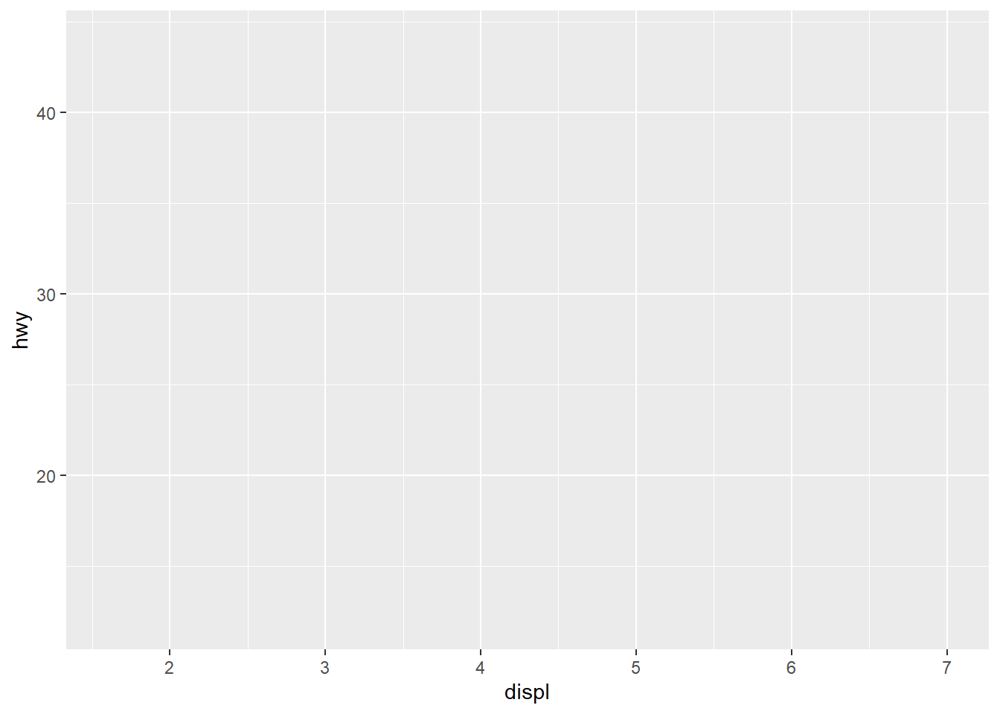
10.2.3 Step 3: Add the geom
Finally, we tell ggplot2 how to draw the data. For a scatter plot, use geom_point():
ggplot(data = mpg, mapping = aes(x = displ, y = hwy)) +
geom_point()
Bigger engines (displ) tend to get worse highway mileage (hwy). The outliers in the upper right? Two-seater sports cars with efficient highway gearing. Even your first chart tells a story.
Common mistake: Putting the
+at the beginning of a new line instead of the end of the previous line. The+must come at the end. Think of it like ending a sentence with “and” before starting the next clause.
10.3 Aesthetic Mappings – Making Charts Informative
aes() is where you tell ggplot which columns from your data control which visual properties. Think of it as assigning roles in a play — “you are the x-axis, you control the color, you determine the size.”
| Aesthetic | What It Controls |
|---|---|
x |
Position on the x-axis |
y |
Position on the y-axis |
color |
Color of points, lines, outlines |
fill |
Fill color of bars and areas |
size |
Size of points or line thickness |
shape |
Shape of points |
alpha |
Transparency (0 = invisible, 1 = solid) |
10.3.1 Mapping vs. Setting – This Trips Everyone Up
There is one distinction that trips up nearly every beginner. Read this twice.
Mapping (inside aes()) connects a variable to a visual property. ggplot2 picks colors automatically and creates a legend:
p_class <- ggplot(data = mpg, aes(x = displ, y = hwy, color = class)) +
geom_point()
ggplotly(p_class)Each car class gets its own color. Legend appears automatically. You did not pick the colors — ggplot did. Hover over any point to see the exact engine size, highway mpg, and vehicle class — this is what interactive visualization looks like in practice. Click a class name in the legend to show or hide it.
Setting (outside aes()) applies a fixed value to everything. No variable, no legend:
ggplot(data = mpg, aes(x = displ, y = hwy)) +
geom_point(color = "steelblue", size = 3, alpha = 0.6)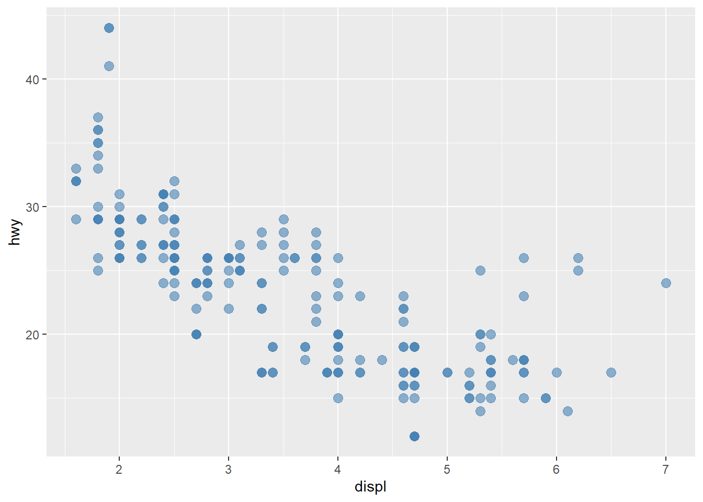
All points are steel blue, size 3, 60% opaque. If you accidentally put color = "steelblue" inside aes(), you will get bizarre results and a useless legend. Mapped aesthetics go inside aes(). Fixed values go outside.
10.3.2 Combining Multiple Aesthetics
You can map several variables at once for richer, more informative charts:
ggplot(data = mpg, aes(x = displ, y = hwy, color = class, shape = drv)) +
geom_point(size = 2.5)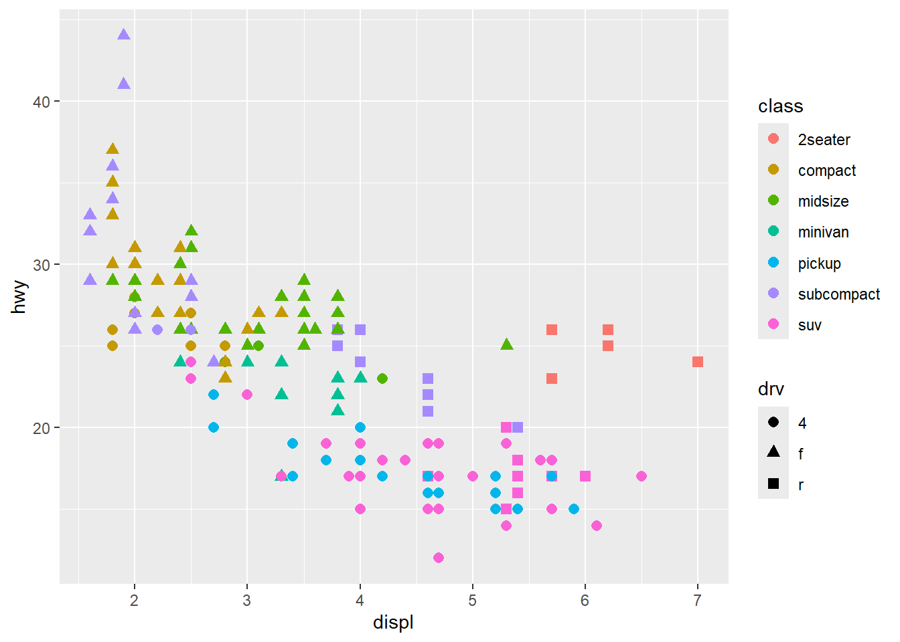
Map a continuous variable to color and you get a gradient:
ggplot(data = mpg, aes(x = displ, y = hwy, color = cty)) +
geom_point(size = 2)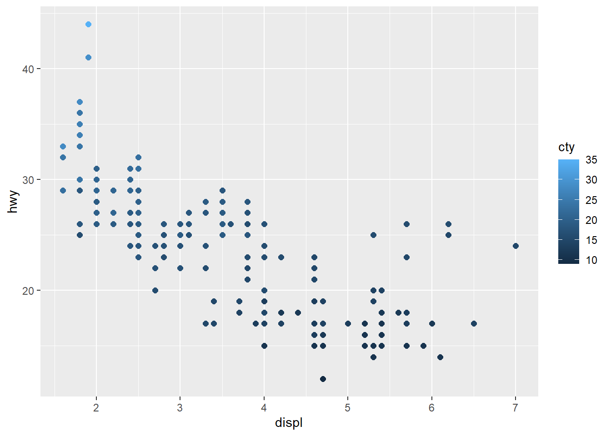
10.4 Geoms – The Chart Types That Matter
Geoms are the building blocks. Each one draws a different shape. Here are the ones you will use 90% of the time in any business context.
10.4.1 Bar Chart – Counting Categories
How many observations in each category? geom_bar() counts for you automatically — no pre-calculation needed:
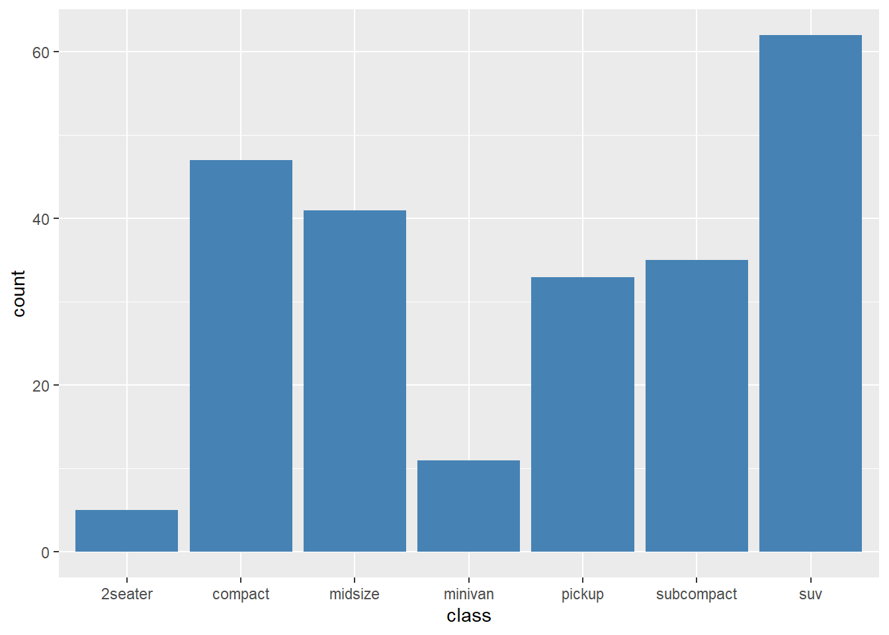
If you already have pre-computed values (say, average revenue by region from a summary table), use geom_col() instead:
mpg_avg <- mpg %>%
group_by(class) %>%
summarize(avg_hwy = mean(hwy))
ggplot(data = mpg_avg, aes(x = class, y = avg_hwy)) +
geom_col(fill = "steelblue") +
geom_text(aes(label = round(avg_hwy, 1)), vjust = -0.5, size = 3.5)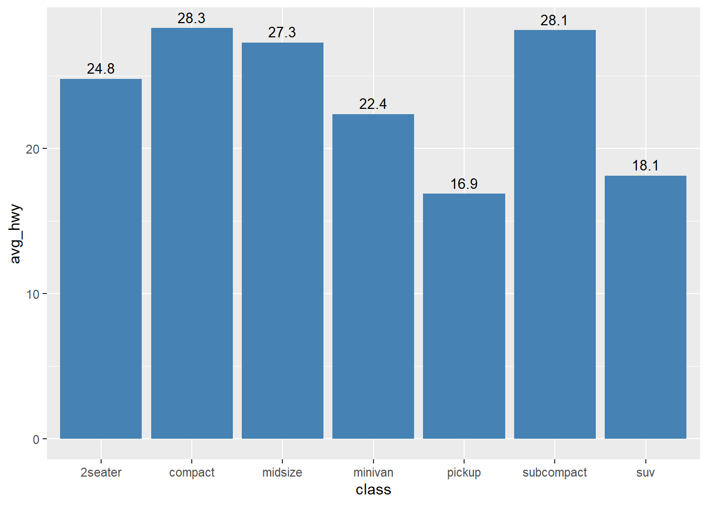
Adding value labels on top of bars is the kind of small touch that makes your manager think you have been doing this for years.
10.4.2 Histogram – Distribution of a Continuous Variable
“How are values spread out?” is one of the first questions any analyst should ask. Histograms answer it:
ggplot(data = mpg, aes(x = hwy)) +
geom_histogram(binwidth = 2, fill = "steelblue", color = "white")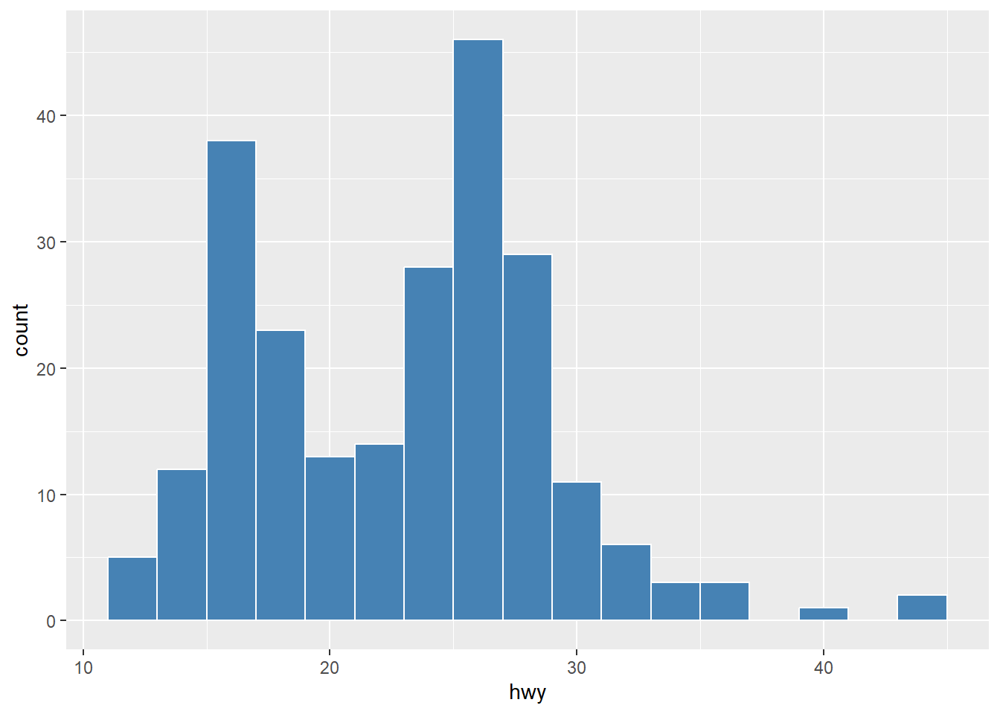
The histogram reveals that highway fuel economy clusters around two peaks — one near 17 mpg and another near 26–29 mpg — suggesting two distinct groups of vehicles (likely city-friendly small cars versus larger trucks/SUVs). This bimodal shape is a story in itself.
Play with binwidth to change the granularity. Too few bins hides patterns; too many creates noise. It is like choosing the right zoom level on a map.
10.4.3 Scatter Plot – Relationships Between Two Numbers
The workhorse of exploratory analysis. Great for spotting correlations, clusters, and that one weird outlier your intern accidentally entered:
ggplot(data = mpg, aes(x = displ, y = hwy)) +
geom_point()
When points pile on top of each other (overplotting), use transparency or jitter:
ggplot(data = mpg, aes(x = displ, y = hwy)) +
geom_jitter(width = 0.2, height = 0.5, alpha = 0.6)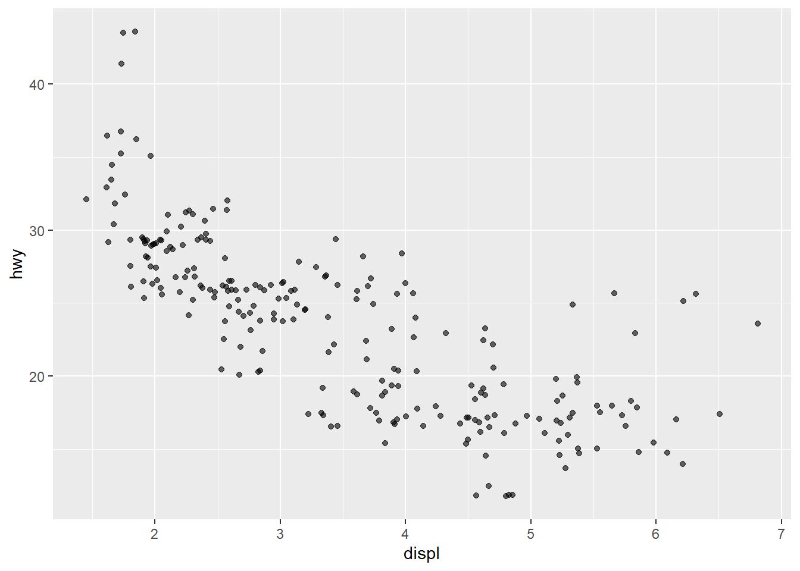
10.4.4 Line Chart – Trends Over Time
The bread and butter of business dashboards. Revenue by month, stock prices, KPIs over time:
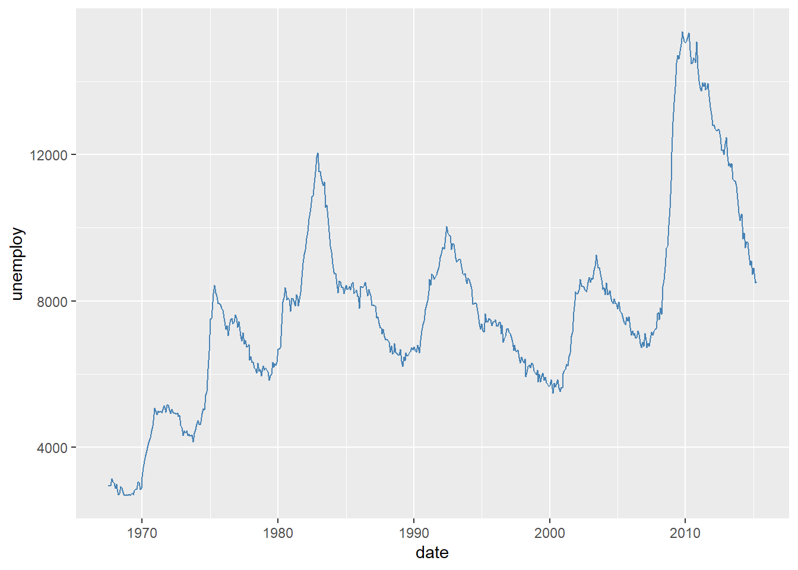
The unemployment trend shows dramatic spikes during major recessions (early 1980s, 2008–2010) followed by gradual recoveries. The long-term pattern is cyclical, and the overall level has trended upward over decades as the labor force has grown. A chart like this immediately tells a story that a table of monthly numbers never could.
10.4.5 Smooth Line – Trend Lines and Regression
Add a trend line to a scatter plot with geom_smooth(). By default, it uses a method called LOESS (LOcally Estimated Scatterplot Smoothing) — a flexible curve that adapts to the shape of your data. Think of it as a moving average that bends to follow the trend. This is incredibly useful for showing the overall direction without getting lost in the noise:
ggplot(data = mpg, aes(x = displ, y = hwy)) +
geom_point(alpha = 0.4) +
geom_smooth()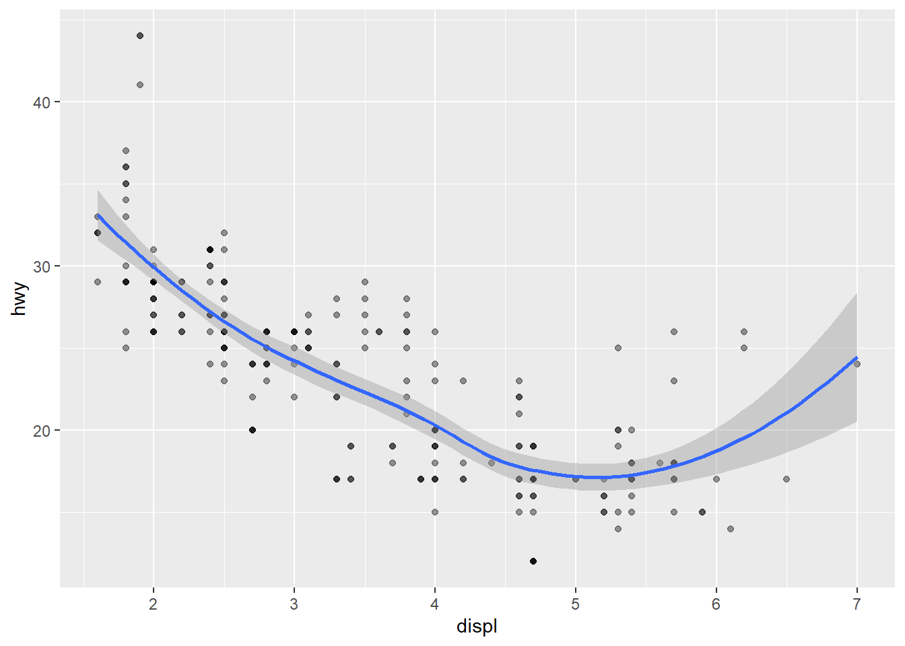
The smooth curve shows a clear downward trend: as engine size increases, highway fuel economy drops. The gray band around the line is a confidence interval — wider at the edges where there are fewer data points, narrower in the middle where the estimate is more certain.
Want a straight regression line? Specify method = "lm":
ggplot(data = mpg, aes(x = displ, y = hwy)) +
geom_point(alpha = 0.4) +
geom_smooth(method = "lm", se = TRUE, color = "red")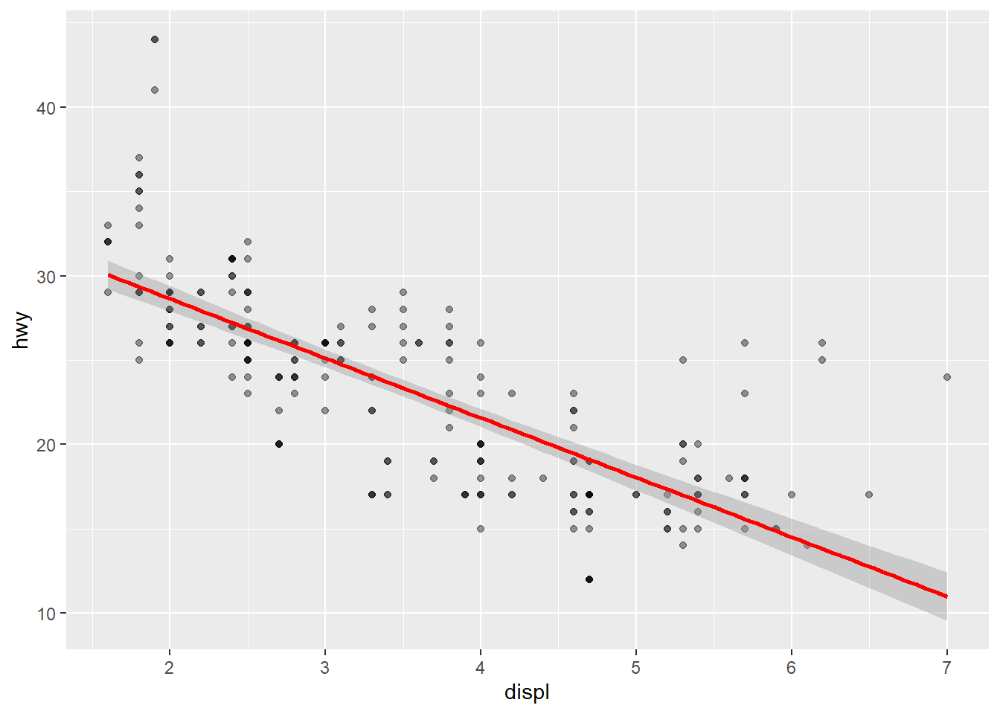
10.4.6 Boxplot – Comparing Distributions Across Groups
Boxplots let you compare a numeric variable across categories at a glance — like highway mileage by vehicle class:
ggplot(data = mpg, aes(x = class, y = hwy)) +
geom_boxplot(fill = "lightblue", color = "navy")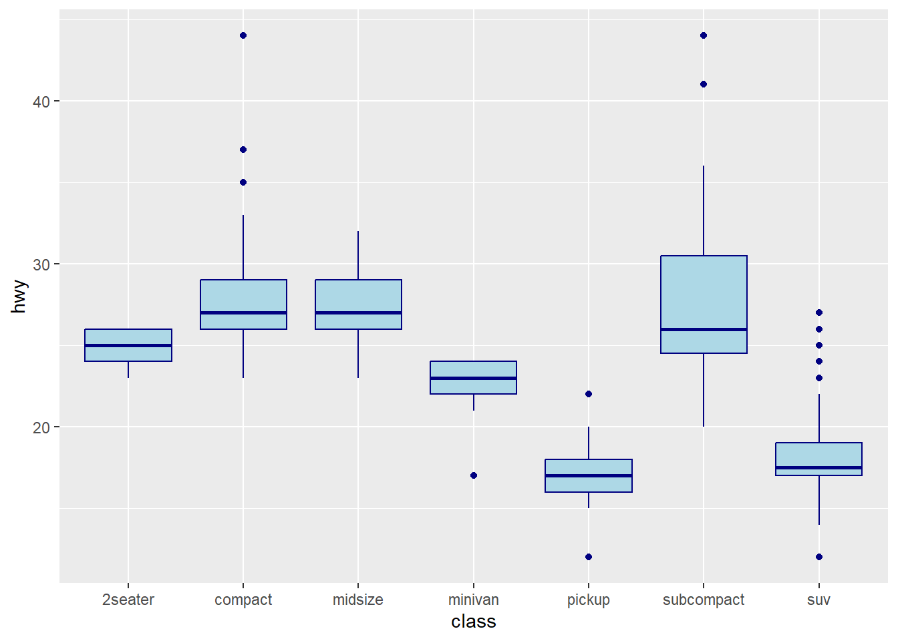
The box is the middle 50%, the line is the median, and the dots are outliers. It is the executive summary of a distribution. Here we can see that pickups and SUVs have the lowest highway fuel economy (medians around 17–18 mpg), while compact and subcompact cars lead the pack (medians around 27–28 mpg). The midsize class has the tightest IQR, meaning those vehicles are the most consistent.
10.4.7 Layering Multiple Geoms
One of the best things about ggplot2 is that you stack geoms like layers on a cake. Points plus a trend line plus a reference line? No problem:
ggplot(data = mpg, aes(x = displ, y = hwy)) +
geom_point(aes(color = class)) +
geom_smooth(color = "black", se = FALSE) +
geom_hline(yintercept = mean(mpg$hwy), linetype = "dotted", color = "gray50")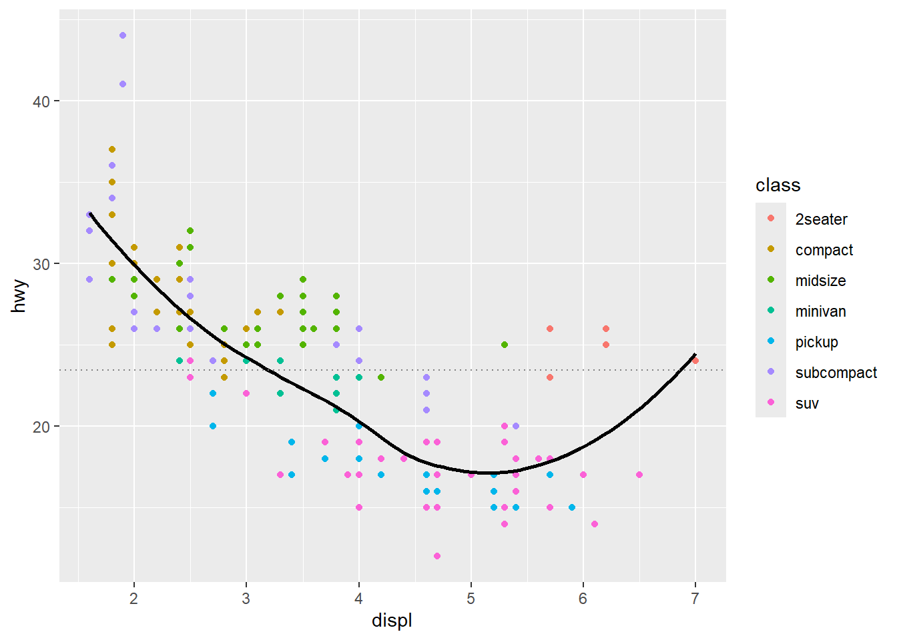
That dotted line shows the overall average highway mpg. Points above the line are above average; points below are below average. Notice how SUVs and pickups cluster below the line while compact cars float above it. Layering like this makes your charts tell a richer, more complete story.
10.5 Faceting – One Chart Per Category
Faceting splits your data into subsets and creates a separate panel for each one. In the data viz world, these are called “small multiples,” and they are one of the most powerful ways to compare groups without cramming everything into a single cluttered chart.
10.5.1 facet_wrap()
Wraps panels in a row-by-row layout:
ggplot(data = mpg, aes(x = displ, y = hwy)) +
geom_point() +
facet_wrap(~ class)
Each panel tells its own story. Compact cars cluster in the upper-left (small engines, good mileage), while SUVs and pickups fill the lower-right (big engines, poor mileage). Two-seaters show an interesting outlier — a couple of high-mileage cars with large engines (likely sports cars with efficient highway gearing). Faceting lets you spot these patterns that would be hidden in a single crowded chart.
Control the layout with ncol:
ggplot(data = mpg, aes(x = displ, y = hwy)) +
geom_point() +
facet_wrap(~ class, ncol = 4)
10.5.2 facet_grid()
Creates a grid defined by two variables — rows and columns. Think of it as a pivot table, but visual:
ggplot(data = mpg, aes(x = displ, y = hwy)) +
geom_point() +
facet_grid(drv ~ cyl)
Each cell shows one combination of drive type (rows) and cylinder count (columns). Empty panels are informative too — there are no rear-wheel-drive (r) 4-cylinder cars, and no 4-wheel-drive (4) 5-cylinder cars in this dataset. The grid layout makes it easy to read both across (comparing cylinder counts within a drive type) and down (comparing drive types within a cylinder count).
10.5.3 Letting Axes Vary with Free Scales
By default, all panels share the same axes. Sometimes that hides patterns in smaller groups. Use scales = "free_y" (or "free_x" or "free") to let each panel set its own range:
ggplot(data = mpg, aes(x = hwy)) +
geom_histogram(binwidth = 2, fill = "steelblue", color = "white") +
facet_wrap(~ class, scales = "free_y")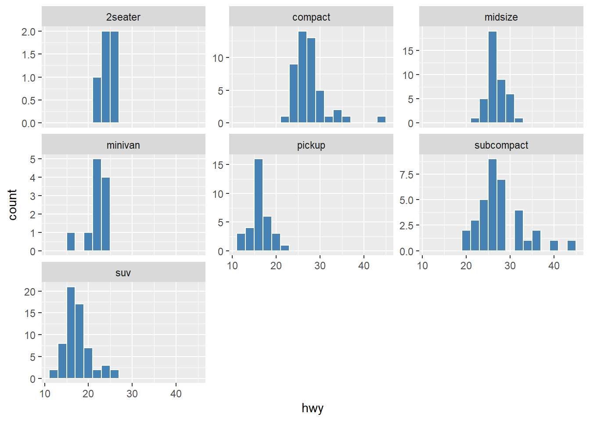
10.6 Position Adjustments for Bar Charts
When your bar chart has a fill variable, you need to decide how the bars relate to each other. Three options worth knowing:
10.6.1 Stacked (the default)
Bars stacked on top of each other. Good for showing total sizes and composition:
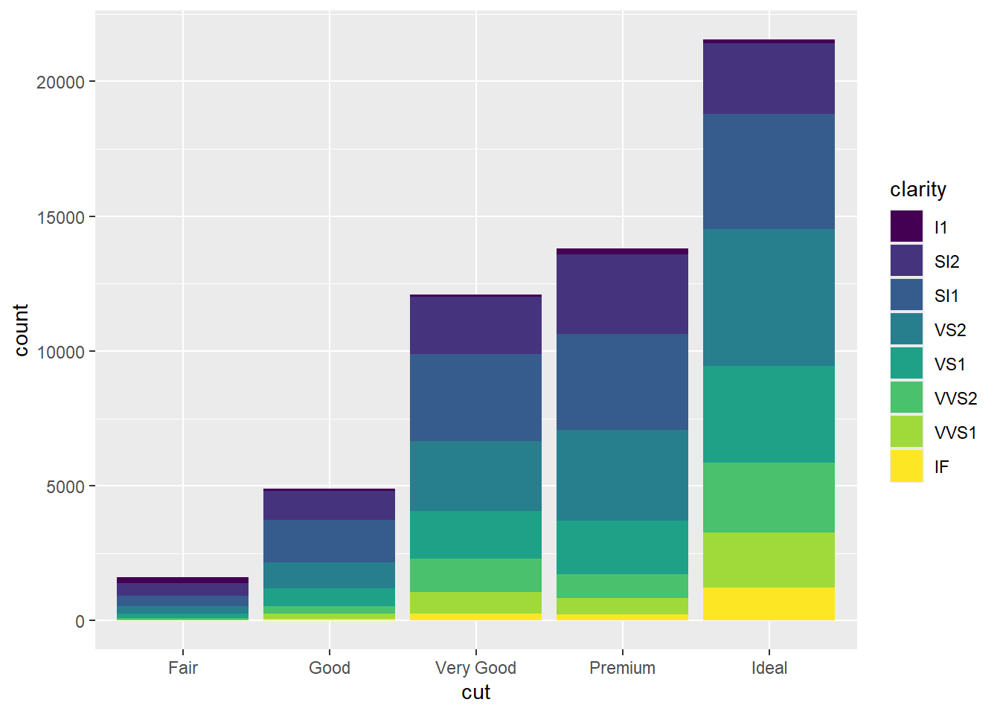
The stacked bars show that “Ideal” cut has the most diamonds overall (tallest bar), and you can see the composition by clarity within each cut. However, comparing individual clarity levels across cuts is hard because the segments have different starting points — that is the trade-off of stacking.
10.6.2 Dodged (side by side)
Bars placed next to each other. Better for comparing individual groups:
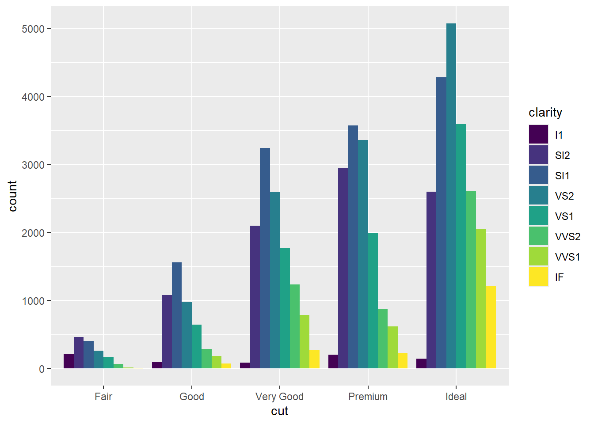
Dodged bars make it easy to compare individual clarity levels across cuts. You can immediately see, for example, that SI1 and VS2 are the most common clarity grades within every cut quality. The trade-off is that with eight clarity levels, the bars get quite narrow — dodged position works best with fewer groups (three to five).
10.6.3 Filled (proportions)
All bars stretched to the same height, showing percentages. Great for “what share of each category falls into each bucket?”:
ggplot(data = diamonds, aes(x = cut, fill = clarity)) +
geom_bar(position = "fill") +
ylab("Proportion")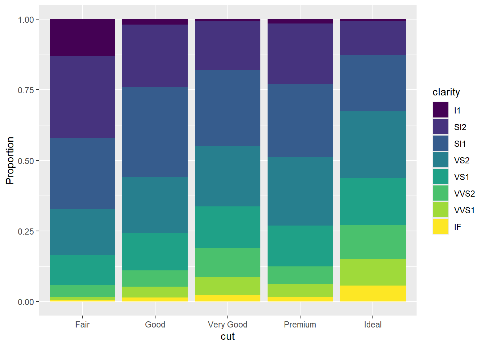
Filled bars normalize everything to 100%, so you can compare proportions directly. Here the clarity composition looks remarkably similar across cut qualities — a surprise, since you might expect “Ideal” cuts to have higher clarity. This tells you that cut and clarity are relatively independent in this dataset.
10.7 Coordinate Systems
A couple of coordinate tweaks that come up regularly.
10.7.1 coord_flip() – Horizontal Bar Charts
When your category labels are long and overlap, just flip the axes:
ggplot(data = mpg, aes(x = class)) +
geom_bar(fill = "steelblue") +
coord_flip()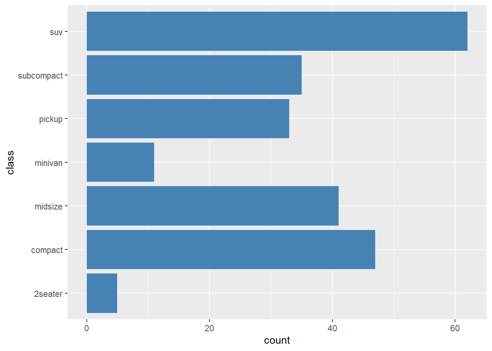
10.7.2 coord_cartesian() – Zooming Without Losing Data
This lets you zoom into a region of your plot without actually throwing away data points:
ggplot(data = mpg, aes(x = displ, y = hwy)) +
geom_point() +
geom_smooth() +
coord_cartesian(xlim = c(3, 6), ylim = c(15, 35))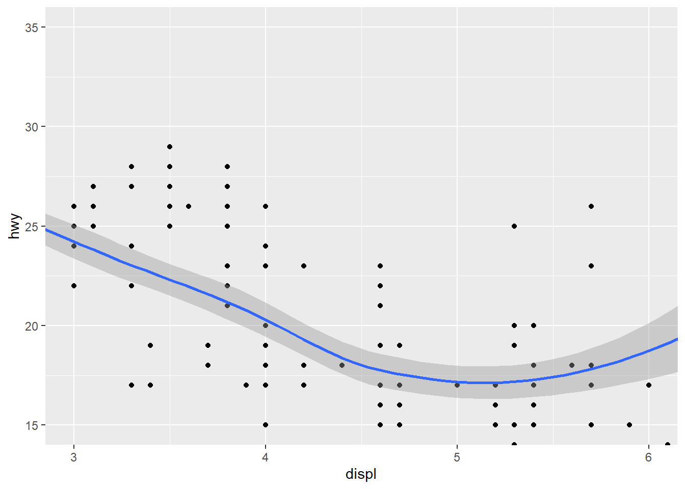
This is different from setting axis limits directly, which removes data outside the range and can distort trend lines. coord_cartesian() just changes the camera angle.
10.8 Labels and Annotations – Making Charts Presentation-Ready
A chart without labels is like a resume without your name on it. Technically it exists, but it is not doing you any favors.
10.8.1 The labs() Function
labs() is your one-stop shop for titles, subtitles, captions, and axis labels:
ggplot(data = mpg, aes(x = displ, y = hwy, color = class)) +
geom_point() +
labs(
title = "Fuel Efficiency vs. Engine Displacement",
subtitle = "Data from EPA for 38 popular car models (1999-2008)",
caption = "Source: mpg dataset in ggplot2",
x = "Engine Displacement (liters)",
y = "Highway Fuel Economy (mpg)",
color = "Vehicle Class"
)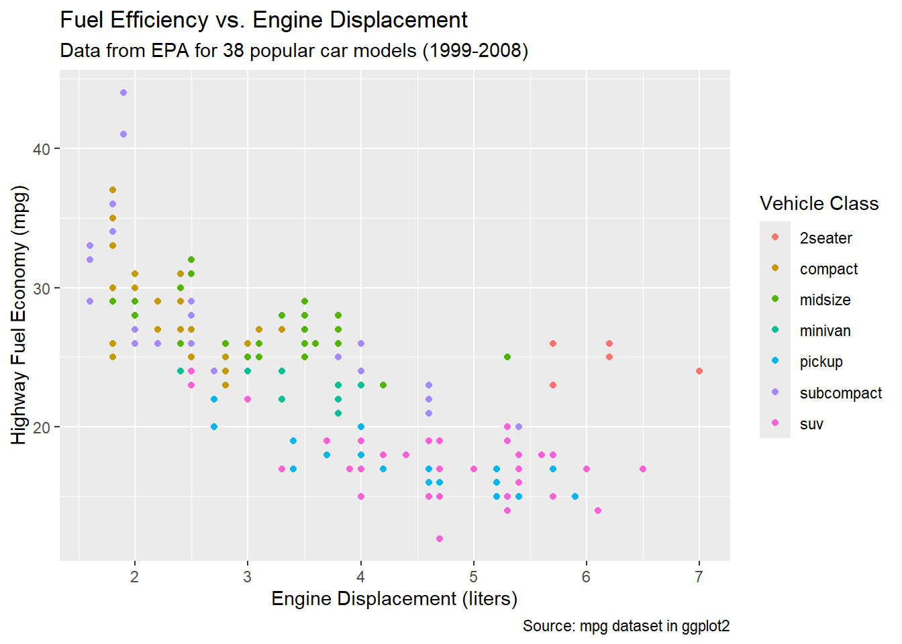
Every chart you put in front of another human being should have, at minimum, a title and clear axis labels. Subtitles and captions are bonus polish that signal you actually care about your audience.
10.8.2 annotate() – Adding Notes to Specific Spots
annotate() lets you place text, rectangles, or arrows at exact positions on your plot — perfect for calling out that anomaly your boss will definitely ask about:
ggplot(data = mpg, aes(x = displ, y = hwy)) +
geom_point(alpha = 0.5) +
annotate(
"text",
x = 6, y = 40,
label = "High efficiency\nlarge engines",
color = "red", fontface = "italic", size = 4
) +
annotate(
"rect",
xmin = 5, xmax = 7, ymin = 35, ymax = 45,
alpha = 0.1, fill = "red", color = "red", linetype = "dashed"
)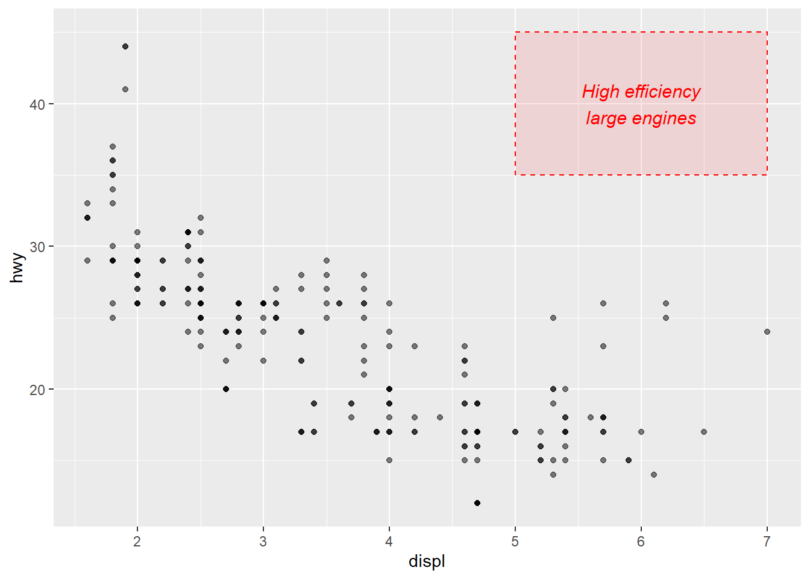
Reference lines are also great for adding context — like showing the average so people know where “normal” is:
ggplot(data = mpg, aes(x = displ, y = hwy)) +
geom_point(alpha = 0.5) +
geom_hline(yintercept = mean(mpg$hwy), linetype = "dashed", color = "red") +
geom_vline(xintercept = mean(mpg$displ), linetype = "dashed", color = "blue")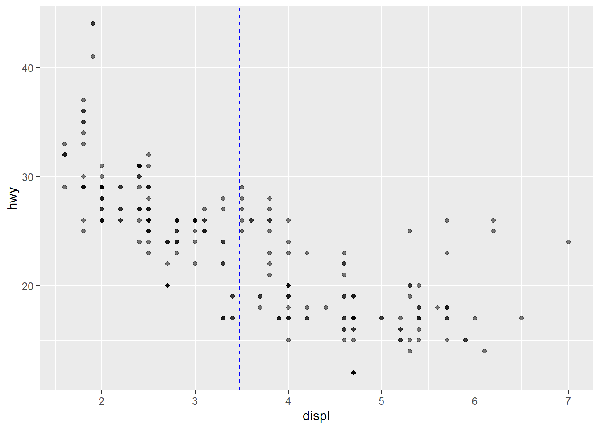
10.9 Saving Your Plots
Made something worth sharing? Save it with ggsave():
# Save the last plot as a PNG
ggsave("my_plot.png", width = 8, height = 6, dpi = 300)
# Save as PDF (great for print or presentations)
ggsave("my_plot.pdf", width = 8, height = 6)
# Save a specific plot object
my_plot <- ggplot(mpg, aes(displ, hwy)) + geom_point()
ggsave("specific_plot.png", plot = my_plot, width = 10, height = 7, dpi = 150)10.10 Putting It All Together
Let’s build a polished visualization step by step, applying everything from this chapter. We will use the diamonds dataset to see how price relates to carat weight across cut qualities.
10.10.1 Start simple
ggplot(data = diamonds, aes(x = carat, y = price)) +
geom_point()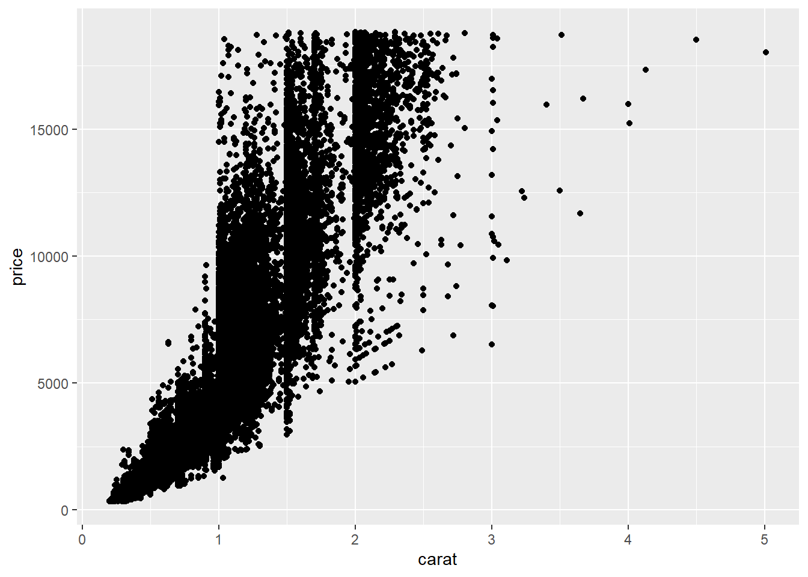
Over 50,000 data points. Everything is overplotted into an unreadable blob. Let’s fix that.
10.10.2 Fix overplotting
ggplot(data = diamonds, aes(x = carat, y = price)) +
geom_point(alpha = 0.05, size = 0.5)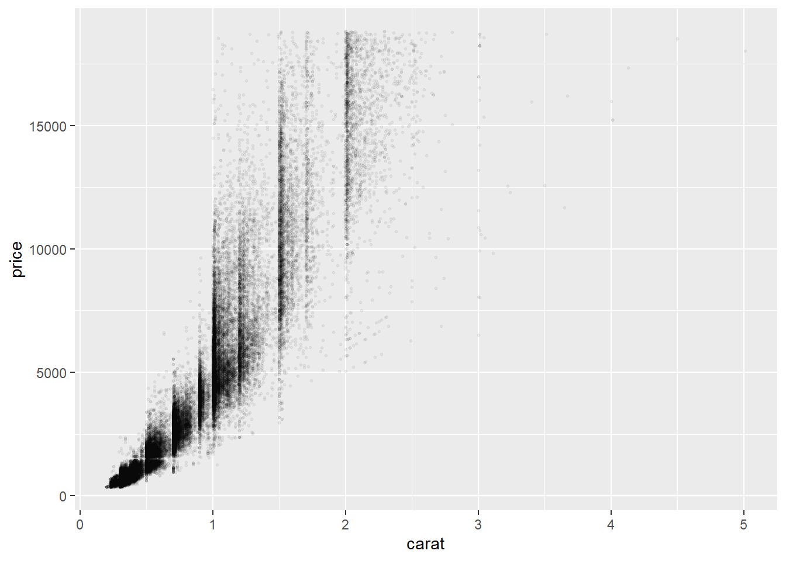
10.10.3 Add color for cut quality
ggplot(data = diamonds, aes(x = carat, y = price, color = cut)) +
geom_point(alpha = 0.05, size = 0.3) +
geom_smooth(se = FALSE, linewidth = 1)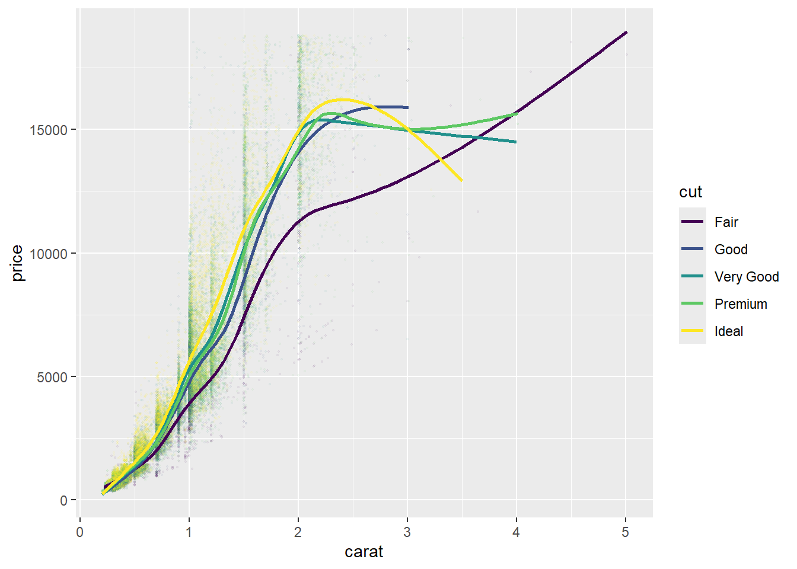
10.10.4 Facet for clarity and polish it
ggplot(data = diamonds, aes(x = carat, y = price)) +
geom_point(alpha = 0.05, size = 0.3, color = "steelblue") +
geom_smooth(color = "red", se = FALSE) +
facet_wrap(~ cut) +
scale_y_continuous(labels = scales::dollar_format()) +
labs(
title = "Diamond Price by Carat Weight and Cut Quality",
subtitle = "Each panel shows one of five cut grades; red line is a LOESS smooth",
caption = "Source: diamonds dataset in ggplot2",
x = "Carat Weight",
y = "Price (USD)"
) +
theme_minimal(base_size = 12) +
theme(
plot.title = element_text(face = "bold"),
strip.text = element_text(face = "bold"),
panel.grid.minor = element_blank()
)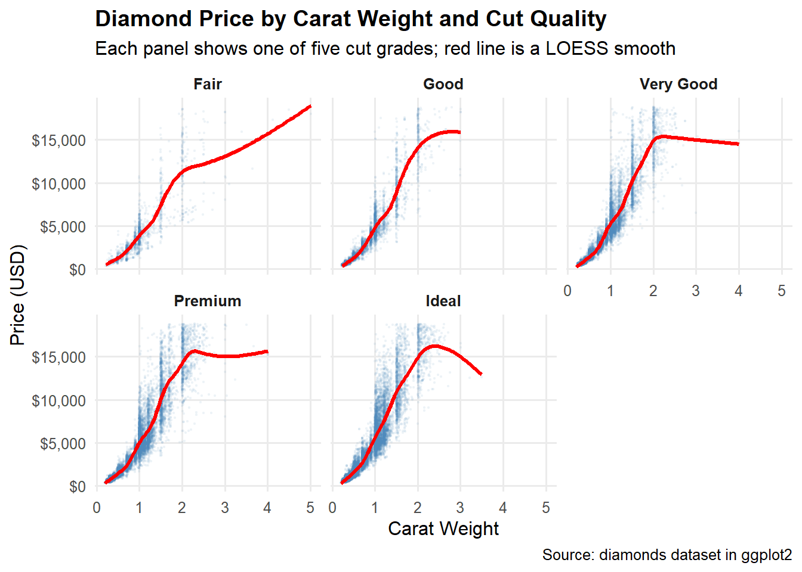
The finished chart reveals a clear pattern: price rises steeply with carat weight for all cut grades, but the relationship is nonlinear — price accelerates at higher carat weights. Interestingly, the curves look similar across cut qualities, suggesting that carat weight dominates price more than cut does (at least in this dataset). That is the grammar of graphics at work. Data, aesthetics, geoms, facets, labels, theme — all layered incrementally so you can experiment and debug at each step. It is like building a presentation slide by slide instead of trying to design the whole deck at once.
10.10.5 One more: a time series
ggplot(data = economics, aes(x = date, y = unemploy / 1000)) +
geom_line(color = "steelblue", linewidth = 0.8) +
geom_smooth(method = "loess", span = 0.1, se = FALSE, color = "red", linewidth = 0.5) +
scale_x_date(date_labels = "%Y", date_breaks = "5 years") +
labs(
title = "U.S. Unemployment Over Time",
subtitle = "Monthly number of unemployed persons (in thousands), 1967-2015",
caption = "Source: economics dataset in ggplot2",
x = NULL,
y = "Unemployed (thousands)"
) +
theme_minimal(base_size = 12) +
theme(
plot.title = element_text(face = "bold"),
axis.text.x = element_text(angle = 45, hjust = 1),
panel.grid.minor = element_blank()
)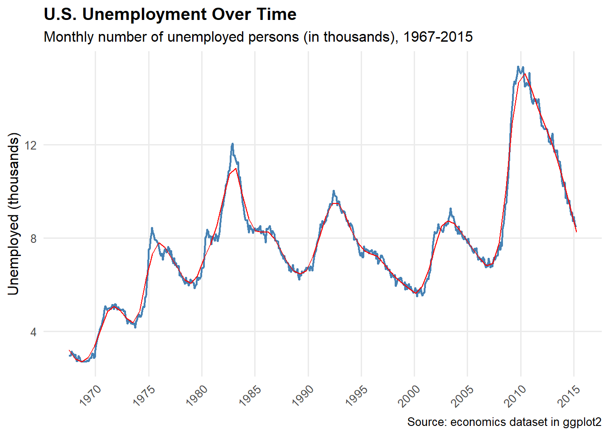
You now have everything you need to build charts that make people stop scrolling through their phones in meetings. In the next chapter, we will cover how to customize colors, themes, and layouts to make your plots look truly professional.
One thing worth remembering: a well-made chart is a persuasive thing, and persuasive things carry responsibility. Misleading axis scales, cherry-picked time ranges, and conveniently buried subgroup patterns are all forms of dishonesty — even if the underlying data is real. The same skills that let you make a chart compelling also let you make it deceptive. Show the data honestly, even when honest is inconvenient. That is not idealism. That is professional integrity, and it is non-negotiable.